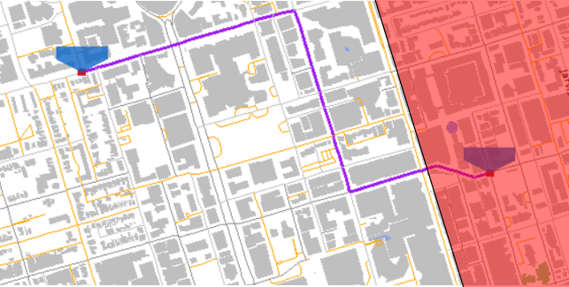
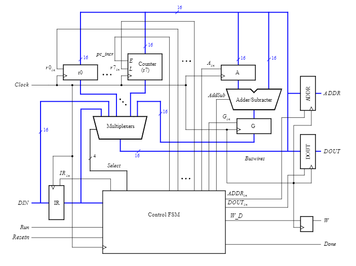
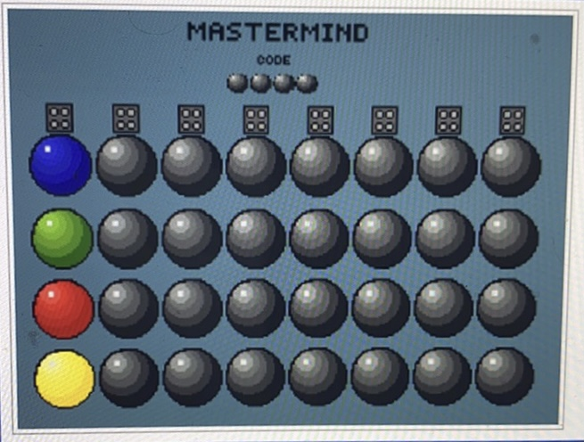

Writing useful programs is the ideal way to test your skills and learn in the process. Naturally, as a computer engineering student I took many C/C++ theory courses but it wasn't until I did projects that I grew confident in my skills. This is especially true for languages such as Python and JavaScript for which I had no "formal education". Below I discuss some of the projects I've completed and the skills they've taught me.
PeaPod was founded by Jayden Lefebvre, another ECE student at UofT. It’s purpose is to create an environment where plants can be grown autonomously and remotely in ideal conditions. A secondary purpose was to use the data it generated to research different ML models in an attempt to determine the aforementioned “ideal conditions”. This project has many many contributors; My role was to send instructions to the micro-controller (arduino nano). Interestingly enough this was done using a JavaScript library called Johnny-Five since the main app was already written in JavaScript.
This is a simple text conferencing app designed to run on linux terminals. Users connect to a server by passing an IP address and a port #. Once connected they can send messages and files to other connected users or create private group chats. This project was intimidating but taught me many new things. I had to learn how to read files and safely work with its data in memory. More importantly, it taught me the basics of networking in C with UDP and TCP sockets.
This was the first game I ever built. The game Orthello implemented in the terminal with C. Users played against a simple AI; you input your move and then the state of the board is printed to the terminal. The primary difficulty in implementing this wasn't the game logic or the flow of control but in coding the bot. The bot worked by ranking valid moves by points. Higher points were assigned to moves which resulted in a more advantageous position, such as acquiring corners.
This project was a collaborative effort from my 2 partners and I. There were 3 main components to building our GIS. We used the OpenStreetMap API to collect geographic inforamtion which was primarily organized as a massive graph of intersections (nodes) and streets (edges). The GTK library was used to render graphics, and finally features such as pathfinding were implemented using Djkstra's algorithm. This project was significantly larger in scope than anything else I had ever done (obviously with exception to PeaPod). As a result, there was significant planning prior to writing any code. Decisions ranged from how should the code be organized to make collaboration effective to what architecture should we use to deliver top performance. The GIS was tested on many cities such as Tehran, Cairo, New Delhi, Tokyo, NYC, and more to measure usability and responsiveness using metrics researched and used by Google Maps.
A simple processor using the De-1-Soc board's hardware. The image below shows the processor's architecture. It recognizes a small amount of instructions then controls flow using a FSM. The processor code was written in verilog then debugged and tested using modelsim.
This project was also built on the De-1-Soc board. It was particularly fun to code since specific areas in memory were significant. The address of the pixel buffer for the VGA board, keyboard, etc were all known and constant. This meant I could read and write directly to memory to process I/O. User input was taken through the board’s keys and the game was displayed on the board’s VGA display by writing to the aformentioned pixel buffer. The approach to graphics was very brute force; hex colors were written to memory for each pixel which made pixel art very conveniant.
